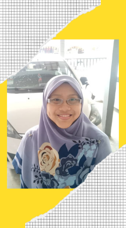
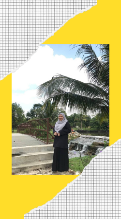
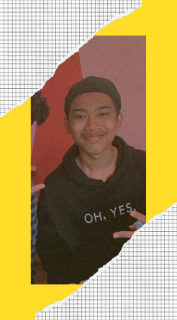
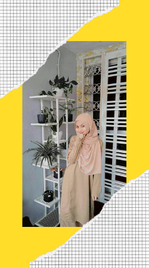

This is my lively family. I have 7 family members including me, my siblings are a total of 5 people of which I have 2 sisters, a younger brother and a younger sister. Now I will introduce them one by one to you all so that you know them better. So, what are you waiting for? Let's get start!

This is my mother and father. Okay, first of all, I will introduce my dad. The name was given to Mohd Nizam bin Omar. We call him by the call of the father. My father was born in Muar, Johor Baharu on June 26, 1968. My father was a teacher in a primary school, Sekolah Kebangsaan Taman Merdeka. Dad started working there as a Senior Assistant Teacher 1 (GPK1) in 2018 until now. During his free time, he likes to do carpentry such as making flower vase shelves, 2 in 1 chairs, dining tables, and all sorts of other items and accessories that he has produced.
^^
Next up is my mother. The mother was named Nor Jannah bint Abdul Wahab. My mother was born in Terengganu, Kuala Terengganu on February 17, 1970. My mother was also a teacher who worked in a primary school called Sekolah Kebangsaan Bukit Beruang. Since we moved to Melaka in 2006 until now, my mother still serves at the school. Faithful isn't it? hehehe.. I will cultivate when I have free time. Many types of plants such as flowers, fruits, and vegetables that mothers grow in their gardens. Among the fruits and vegetables that the mother plants are cucumbers, chilies, curry leaves, and lime trees while for the flowers, the mother plants hibiscus trees, rose trees, and butterfly-pea trees. Every morning before leaving for work, the mother will water it first and after coming home from work in the evening, the mother will not forget to water it so that the plants grow in bloom and health.
^^
So, here's a little bit about mom and dad that I will sometimes reminisce about in remembering their lameness. When they both have free time, they will sit in the kitchen together to cook. They are very fond of cooking when together and this is an opportunity for us to ask for cooking recipes from them. HAHAHAHA, this time is a time that I will remember forever because the experience and memories of cooking with them are very valuable and meaningful. I love them.

This beautiful woman is my eldest sister whom we call kakak. The name was given to Syifa 'Nur Aqilah. Born on 18 June 1996 in Terengganu, Kuala Terengganu. Now, kakak works as a recitation teacher, who used to move to her students ’house to teach. However, after the MCO was conducted, kakak started teaching from home that is, online, which did not require the kakak to move to her student's house. Kakak's students consist of all groups, namely children, teenagers, adults, and also the elderly. Based on my observation, everyone likes and loves it again and again among adults and the elderly. I do not deny the truth that my kakak is a gentle, kind, and also loving person. So, no wonder she is very popular and liked no matter who knows her. Kakak will read when she has free time. Various types of books that she reads such as novels, documentaries, bibliographies, and more. I love seeing her reading because she will focus and appreciate the story being told and she will recommend the book to us if the book is fun and engaging.

This charismatic woman is my second sister named Ulfah 'Izz Zahin. She was born in Kuala Terengganu and was born on November 18, 1998. We call her as adik and she is very fierce and firm but, in her firmness, she is very loving and kind. My sister is very generous because if there is an opportunity, she will take us, siblings, for a walk and also our expenses no matter in terms of food or goods. Ilove hher so much!

This handsome and stylish man is my younger brother named Ammar Danish. He was also born in Kuala Terengganu just like my sisters and also my mother and he was born on 20 August 2006. We as a family will call him by the nickname abang Ammar and he is a student who is still in school at Sekolah Menengah Kebangsaan Ayer Keroh. All I can say about him is that he is a good and light-hearted brother. He always helped us as a family even though he was a bit naughty but his naughtiness couldn’t make us all angry at him. This is because he has his way to calm our hearts, for example, he will make jokes until we laugh which eventually makes us forget the anger earlier. That's an advantage he has that we don't have. In his free time, he will play games on his phones such as Mobile Legends and PES5. Sometimes, he would play with our cousins or with his friends but mostly more with his friends.
